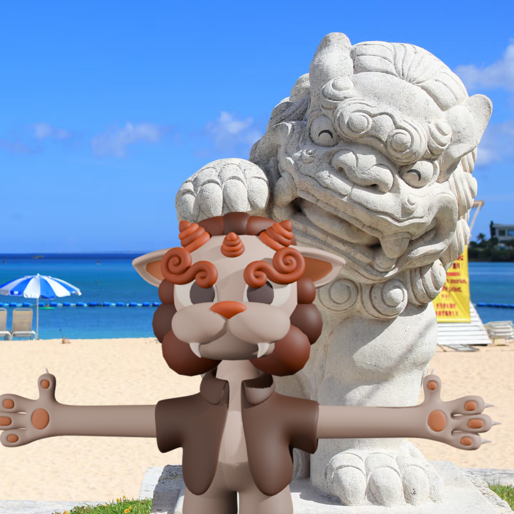
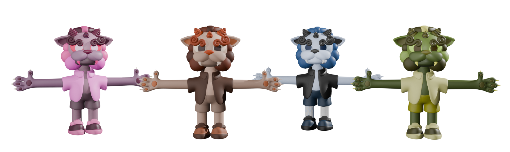
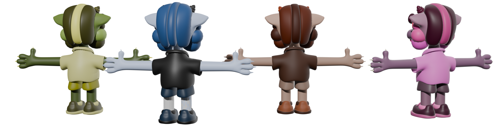

CHISA-SHISA
Project Description
Chisa-Shisa is a 3D model made on Blender. The goal of the project was to familiarize myself with all the blender tools and techniques I had learned up watching tutorials up until that point. It is also the first 3D model I designed myself and made completely from scratch without following a tutorial. I always wanted to be able to draw cute characters, but I never thought I would make some in 3D, making this project gave me the confidence I needed to start 3D games with my own assets.
Chisa-Shisa means "Small-Shisa" in Japanese, most shisa representations are more imposing than this one, so I thought this cute name was appropriate.The 3D model is downloadable on my Github.
Demonstration
Please take a look at the model in different colors down here. You can get more insight on how I made it by checking this playlist.


Process
This 3D model is the first one I have ever realized all on my own, so of course it came with its challenges. Here are some of the main ones GitHub repository.
The concept
I doodle everyday to generate ideas, right before starting this project, I was in a phase where I would draw a lot of Shisas. I discovered about Shisas in Summer 2025 during my trip to Okinawa in Japan. This lion-dog is the guardian of Okinawa, it is told to bring good luck and protect homes from evil spirits. For this exact reason, statues of Shisas are everywhere
After deciding I wanted to try to make a Shisa in 3D, I drew even more doodles to decide on a style. When I finally reached a satisfying design, I drew views of the full-body. One from the front, back and side.
The 3D model ended up looking pretty different than the sketches, but they still helped me on deciding which important shapes to use and how to combine them.
3D Modeling
The model was made by combining simple shapes together. The order in which the shapes were assembled is not the same, the video named "Construction" right here should give you an idea of how the 3D model was realized. I used blender's modifiers to add geometry and add constraints to keep the eyes stuck to the head surface, and be able to animate them later.
The more complex shapes were simply made using blender's built in "curves" add-on.
The model was made without using the sculpt mode at all. There are 2 main reasons for this: I wanted to familiarize myself with the object mode and edit mode of blender. I also wanted to keep the model as simple as possible in a way that makes it easy to animate in the future eventually.
Experimenting with colors
The colors were chosen from a palette of 1024 colors found on the internet. It is the palette on the left of the screen in the video right here.
To put colors on the different parts of the models, I made UV islands for each individual part of the model, I then scaled down of the islands to 0 in order and positioned them on top of color palette. This methods allowed me to experiment easily with the colors as I could change the island-points all together to create color variations very easily but keeping the overall harmony. Please take a look at the video to see a demonstration of the process.
I usually have trouble with choosing colors for my artworks, but using a palette definitely helped in the process. It also made me realize the importance of choosing colors with a similar hue. I also took conscience of the fact that using too many colors can decrease the impact that they have. For example, for the red version of the Shisa, I manually changed the skin color to white to make the red of the the other parts pop-out.